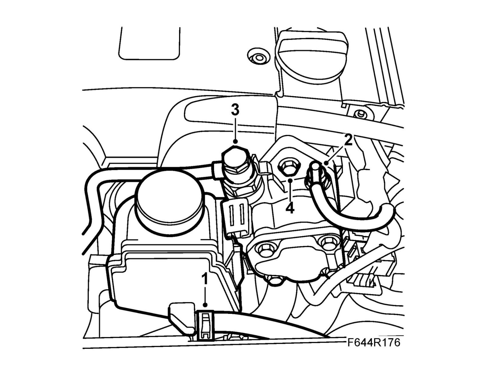
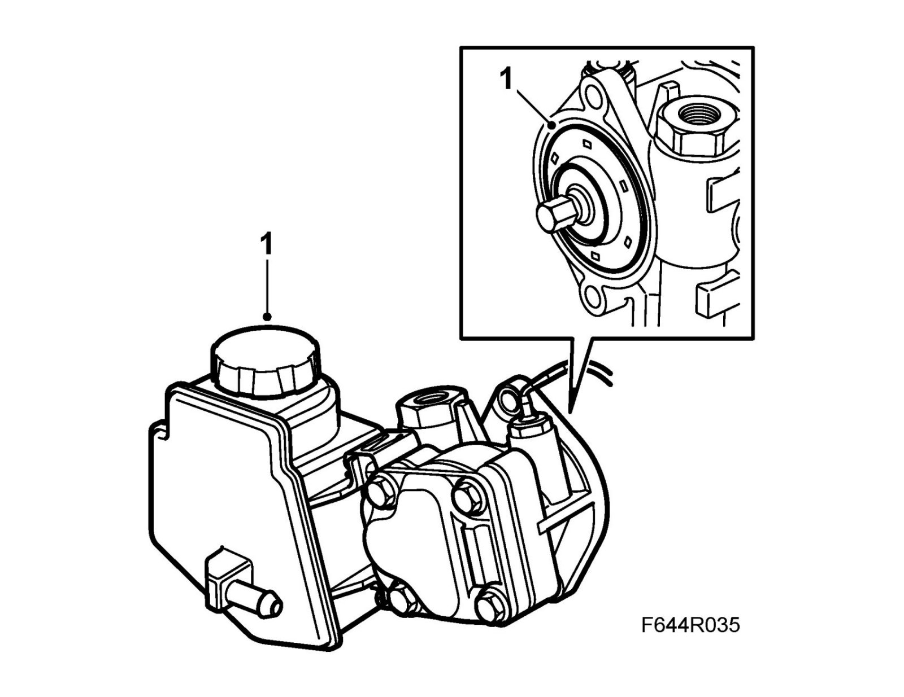

Power Steering Pump: Service and Repair
Power steering pump, B207 petrol engineImportant
Scrupulous cleanliness must always be observed during all work with hydraulic components.
To remove
1. Detach the return hose, wipe up any fluid spill with a cloth and plug the reservoir pipe using 82 92 955 Plugs, spare part kit. Suspend the hose so that fluid does not run out.

2. Remove the electrical connection of the pressure sensor.
3. Remove the delivery pipe from the pump. Wipe up any oil spill with a cloth.
4. Remove the pump. Some engine oil may run out.
5. Empty the fluid from the pump.
To fit
1. Fit the pump using a new gasket.
Tightening torque 22 Nm (16 lbf ft)

2. Connect the return hose.
3. Connect the delivery line using new gaskets.
Tightening torque 32 Nm (24 lbf ft)
4. Connect the electrical connection of the pressure sensor.
5. Fill with fluid and bleed the power steering system. Check for leaks.